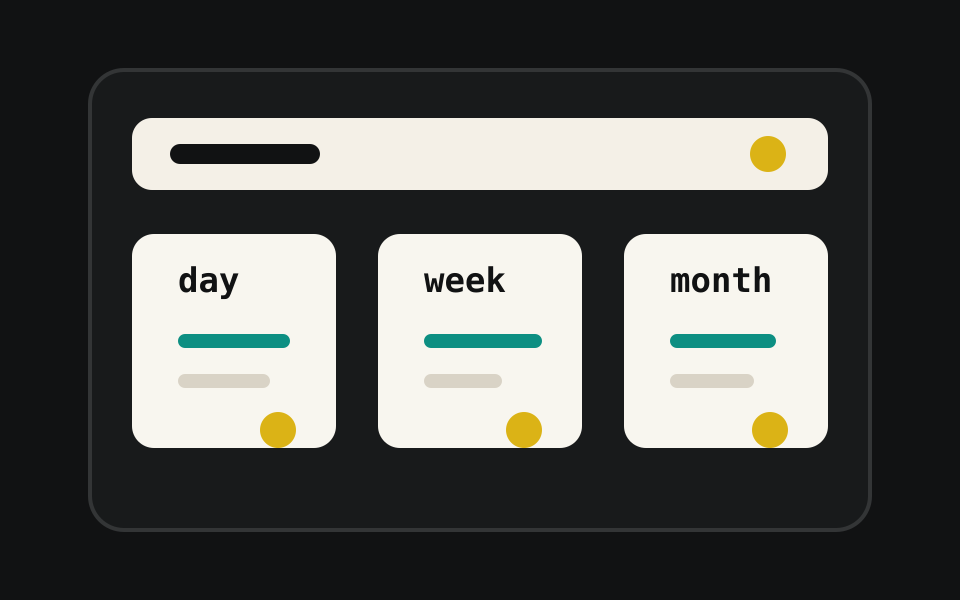

dwmTasks
a focused personal task tracker for recurring day, week, and month tasks with local history, reminders, and home screen widgets.

project description
dwmTasks is built around three repeating views: day, week, and month. users create tasks for the period that matters, complete them as they go, and review what was finished or missed over time.
- separate day, week, and month task lists
- mark tasks as done for the current period
- pause tasks without counting them as missed
- soft-delete tasks while keeping their history in the app
- restore deleted tasks instead of creating duplicates
- history view with recent daily, weekly, and monthly results
- task reminder notifications when open tasks still remain later in the period
- home screen widgets for pending task counts and task lists
- offline-first local storage with no account required
store listing summary
track repeatable day, week, and month tasks with history, reminders, and widgets.
dwmTasks is designed for users who want a lightweight routine tracker without unnecessary clutter. tasks stay on the device, and the current version works without a cloud account, in-app ads, or social login.
privacy fit for google play
google play expects a public, non-pdf privacy policy url that clearly explains developer contact, data access, collection, use, sharing, secure handling, retention, and deletion. this section is written for that publishing use case.
local first
task data is stored on the device in the current version.
no account
the current version does not require account creation or cloud sync.
no ads
the current version does not include in-app advertising.
privacy policy
last updated: 2026-04-29
who we are
konstantin goryagin operates the dwmTasks mobile application.
what dwmTasks does
dwmTasks is a personal task tracking app for recurring day, week, and month tasks. the app lets users create tasks, complete tasks, review recent history, use widgets, and enable local reminder notifications.
data stored by the app
the current version stores the following information on the user's device: task names, task mode assignments such as day, week, and month, task status and completion history, paused and deleted task state, widget configuration preferences, and app settings such as theme, sorting, selected mode, and notification preferences.
accounts and cloud sync
the current version does not require user account creation and does not provide cloud synchronization.
data collection and sharing
based on the current version, dwmTasks does not upload task data to a developer-controlled backend, does not sell user data, does not include in-app advertising, does not include social login, and does not intentionally share task data with third parties.
notifications
if a user enables task reminders, dwmTasks may use android notification permissions to display reminder notifications on the device. notification settings are controlled by the user in the app and through android system settings.
widgets
if a user adds a home screen widget, dwmTasks stores widget mode configuration locally on the device so the widget can display the correct task data.
data retention and deletion
the app stores local data on the device until the user deletes tasks, uninstalls the app, clears app data, or otherwise removes the app's stored data through android system controls. the app uses soft deletion for tasks in the local database so task history can remain available inside the app unless app data is removed from the device.
security
dwmTasks relies on android platform protections and local device storage. in the current app configuration, device backup and restore are disabled through the app manifest. no mobile app can guarantee absolute security, so users should secure access to their devices using the protections available on their android device.
children
dwmTasks is not specifically directed to children.
changes to this policy
this privacy policy may be updated if the app's behavior changes. the updated version should be published on this public page and the date above should be updated.
contact
for privacy questions about dwmTasks, contact konstantin@kongor.co.